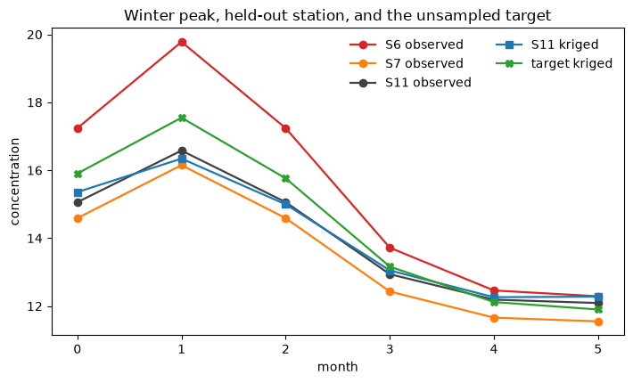

Ordinary kriging answers a question on a map. At a place you did not sample, it returns the linear unbiased estimate of the measured variable, and the error variance of that estimate, from a single variogram. A monitoring network asks that question with a time attached. A station that was never built. A month that was never reported. The value at that place and that month.
This notebook is the map for the four estimators in this chapter. Space-time ordinary kriging keeps the linear system and gives the covariance a spatial lag and a temporal lag. Convolutional LSTM regression kriging, recurrent graph networks, and graph transformers each fit a spatio-temporal trend and then krige the residual, one month at a time. The notebook writes that shared system, then runs space-time ordinary kriging on twelve stations and one target. The four notebooks that follow keep one family each and carry it through the California PM2.5 network for 2025.
Five notebooks predict a value at a place and a month. The four hands-on notebooks use monthly PM2.5 at the California monitoring network for 2025.
Spatio-Temporal Kriging. This notebook. The shared space-time system, and ordinary kriging on twelve stations and one target.
Spatio-Temporal Kriging. An empirical space-time variogram, a fitted metric model, 25 held-out stations, a one-month forecast, and monthly maps.
Convolutional LSTM Regression Kriging. The same panel as an image sequence, a convolutional-LSTM trend, and residual kriging for each month.
Spatio-Temporal GNN Regression Kriging. A k-nearest-neighbor graph, TGCN and DCRNN cells, and the same hold-out and residual kriging.
Spatio-Temporal Graph Transformer Regression Kriging. Spatial and temporal attention in STTN and GMAN, a sinusoidal encoding of the month, and the same protocol.
\(\mathbf{C}\) holds covariances among the samples, \(\mathbf{c}_0\) holds covariances between the samples and the target, and \(\mu\) enforces \(\sum \lambda_i = 1\) so an unknown constant mean cancels. The kriging variance is \(C(0) - \boldsymbol{\lambda}^{\top}\mathbf{c}_0 - \mu\).
A monitoring network reports triples \((\mathbf{u}_i, t_i, Z(\mathbf{u}_i, t_i))\): the same quantity at a set of stations, repeated over time. The predictor keeps the same shape,
The entries of the matrix become covariances of a joint lag. With spatial lag \(h_s = \lVert \mathbf{u}_i - \mathbf{u}_j \rVert\) and temporal lag \(h_t = |t_i - t_j|\),
and the kriging variance is unchanged in form, \(\sigma^2 = C(0) - \boldsymbol{\lambda}^{\top}\mathbf{v}_0 - \mu\). Covariance and semivariogram are related by \(C(h) = C(0) - \gamma(h)\).
The metric model
The model used in this chapter is the metric model (Pebesma, 2012). Space and time are folded into one distance
\[
h_{st} = \sqrt{h_s^2 + (a \, h_t)^2},
\]
and a single variogram \(\gamma(h_{st})\) is evaluated at that distance. The anisotropy \(a\) (stAni) converts a time lag into the units of the map, so the two axes of \(h_{st}\) are commensurable. In the worked example below, coordinates are on a unit square and time is a month index, and \(a = 0.25\): one month counts as \(0.25\) map units inside the square root.
\(a\) decides which neighbors win. A large \(a\) makes a one-month gap a long distance, so the weights stay with the same month at other stations. A small \(a\) makes other months look nearby, so the estimate blends a station’s own series. The worked example sets \(a\) so that the same month at the nearest station outranks last month at that same station.
vgm builds the joint variogram (here a spherical model: a nugget, a partial sill, a range). vgm_st("metric", joint=..., st_ani=a) wraps it as the space-time model STKriging stores.
Separable, product-sum, and sum-metric models
vgm_st also builds four models in which the spatial range and the temporal range are separate parameters. The space-time kriging notebook fits the metric model, which is the robust default on a modest panel. The other four are there when that separation is the point of the fit.
vgm_st name
What the covariance does
separable
A product, \(C(h_s, h_t) = C_s(h_s)\, C_t(h_t)\)
productSum
Spatial variogram, temporal variogram, and their product, with a coefficient \(k\)
sumMetric
A spatial structure, a temporal structure, and a metric joint structure, added
simpleSumMetric
The same sum, with one shared nugget
metric
The joint distance \(h_{st}\) alone
The empirical semivariogram
The empirical semivariogram is the Matheron estimator, binned by spatial lag and temporal lag:
empirical_st_variogram asks for a complete station \(\times\) time matrix: every station observed at every time. fit_metric_st_variogram fits the metric model to that cloud. STKriging.fit accepts an irregular list of rows, so a station that misses a month can still be a kriging neighbor. The California notebook drops the incomplete stations for the variogram only, and puts them back for the kriging.
A local neighborhood
Solving the system against every training row scales as \(O(N^3)\). STKriging.predict(..., nmax=k) builds each prediction from its \(k\) nearest neighbors in the scaled coordinates \((x, y, a \cdot t)\), the same local-neighborhood search gstat’s krigeST uses. Every prediction point is independent, so the local systems are stacked into one batched solve: NumPy on CPU, CuPy on GPU (use_gpu). Global kriging (nmax=np.inf) keeps the dense path on CPU. The example below uses nmax=12 and use_gpu=False.
A neural trend and a kriged residual
The three notebooks after space-time ordinary kriging keep the kriging system and change the numbers it sees. Each one is regression kriging, the two-step sum from the regression-kriging introduction, written at a location \(\mathbf{s}\) and a time \(t\):
\(\mu\) is a neural trend. The residual \(e_i(t) = Z(\mathbf{s}_i, t) - \hat\mu(\mathbf{s}_i, t)\) is ordinary-kriged independently at each time, with a spherical variogram fit to the residuals of that month. Set krige_residuals=False and the prediction is the trend alone.
Training follows the masked-reconstruction idea of Wu, Zhuang, Labbé & Sun (2021). Each epoch hides a subset of stations completely, and also hides a random fraction mask_ratio of the remaining observed station-months. The network reconstructs the hidden cells from the rest of the panel, so it learns to interpolate. After fitting, out-of-fold reconstructions (each station hidden in turn, then read back) supply the residuals that the variogram sees. At prediction time a new location is attached to the training stations only.
All three classes take the same panel. coords has shape (n_stations, 2). values has shape (n_stations, n_times), and a NaN is a missing station-month. predict(coords_pred) returns an array of shape (n_pred, n_times).
Convolutional LSTM
ConvLSTM paints the stations onto a small image. The training box is padded by 5 percent and split so the longer axis has grid_size cells. Each station falls in the nearest pixel; stations that share a pixel are averaged. The input at month \(t\) is a two-channel image, masked value and observation mask. A convolutional LSTM (Shi et al., 2015) replaces every gate of an LSTM with a convolution over that image and the previous hidden state, so a pixel’s next state is a local function of its neighborhood, shared across the map. The trend at a query coordinate is a bilinear sample of the output image, so the prediction sits at the station’s true location.
The raster is the price of that filter. A sparse network is painted onto a coarse grid. The graph models below keep the station coordinates as nodes.
Recurrent graph networks
TGCN and DCRNN build a directed \(k\)-nearest-neighbor graph of the station coordinates. Every node’s input at time \(t\) is the two-channel vector \([m_{i,t} z_{i,t},\; m_{i,t}]\), with \(m_{i,t} \in \{0, 1\}\) the observation mask.
TGCN (Zhao et al., 2019) puts a one-hop graph convolution inside a GRU. The convolution is a GraphSAGE mean,
\[
\mathrm{GC}(X) = W_{\mathrm{self}} X + W_{\mathrm{neigh}} D^{-1} A X,
\]
so the hidden state at a month mixes a station’s own recent history with the current state of its neighbors.
DCRNN (Li, Yu, Shahabi & Liu, 2018) keeps the GRU and replaces each gate with a \(K\)-hop bidirectional diffusion convolution
\[
H = W_0 X + \sum_{k=1}^{K}\bigl(W_k^{f} P_f^{k} X + W_k^{b} P_b^{k} X\bigr),
\]
where \(P_f = D^{-1}A\) and \(P_b = D^{-1}A^{\top}\) are the forward and backward random-walk matrices of the same graph. The extra hops, and the two directions, are what diffusion_k buys over TGCN. The California notebook uses \(K = 2\).
Graph transformers
STTN and GMAN use the same \(k\)-nearest-neighbor graph and the same masked input. Attention has no order of its own, so a sinusoidal positional encoding of the month index (Vaswani et al., 2017) is added to every node.
Spatial attention is a graph Transformer layer: scaled dot-product attention, restricted to the incoming edges of each node, softmax-normalized per head. Temporal attention is self-attention across the months of one node.
STTN (Xu et al., 2020) runs the spatial block and then the temporal block. GMAN (Zheng, Fan, Wang & Qi, 2020) runs them in parallel and mixes them with a learned gate
\[
g = \sigma\bigl(W[h_{\mathrm{spatial}}; h_{\mathrm{temporal}}]\bigr),
\qquad
h = g \odot h_{\mathrm{spatial}} + (1 - g) \odot h_{\mathrm{temporal}}.
\]
That gate is the difference between the two classes. Both are thin aliases of STGTNRegressionKriging (block_type='sttn' or 'gman'), just as TGCN and DCRNN are aliases of STGNNRegressionKriging and ConvLSTM is an alias of CNNLSTMRegressionKriging.
Spatio-temporal kriging in GeoLattice
Object
Call
vgm
The joint variogram: vgm(psill, model, range_, nugget)
vgm_st
The space-time model: vgm_st("metric", joint=..., st_ani=a), or separable, productSum, sumMetric, simpleSumMetric
empirical_st_variogram
Matheron cloud on a complete station \(\times\) time matrix
fit_metric_st_variogram
Fit the metric model to that cloud
STKriging
STKriging(st_model).fit(coords, times, values) then predict(X_pred, T_pred, nmax=)
ConvLSTM
fit(coords, values) with values shaped (n_stations, n_times), then predict(coords_pred)
TGCN, DCRNN
The same panel API. k_neighbors sets the graph. diffusion_k is the DCRNN hop count
STTN, GMAN
The same panel API. n_heads is the attention width. The block is sequential (STTN) or gated (GMAN)
use_gpu=False in the example keeps the kriging arithmetic on NumPy. The four case-study notebooks time the batched neighborhood solve, and the neural training, on CPU and GPU.
STPoissonKriging is the estimator for areal counts and rates, where the variance depends on a population. The target in this chapter is a concentration measured at a point.
The calls below run STKriging on the twelve-station panel. ConvLSTM, TGCN, DCRNN, STTN, and GMAN are imported so the names resolve; the California notebooks are where those networks are trained and scored.
Python setup
Installation. This notebook needs installation option 4 (core, spatial analysis, spatial statistics and geostatistics): pip install "geolattice[geostats]". See “Installation options” in the GeoLattice README.
Code
%matplotlib inlineimport osos.environ.setdefault("TF_CPP_MIN_LOG_LEVEL", "3")os.environ.setdefault("TF_ENABLE_ONEDNN_OPTS", "0")import sysimport warningssys.modules.setdefault("tensorflow", None)warnings.filterwarnings("ignore", category=UserWarning)import numpy as npimport pandas as pdimport matplotlib.pyplot as pltimport geolattice.geostatistics as gstatfrom geolattice.geostatistics import ( STKriging, vgm, vgm_st, ConvLSTM, TGCN, DCRNN, STTN, GMAN,)USE_GPU =False# identical arithmetic on CPU and GPU machinesprint(f"geolattice.geostatistics : {gstat.__version__}")print("trend classes :",", ".join(cls.__name__for cls in (ConvLSTM, TGCN, DCRNN, STTN, GMAN)),)
and rounded to two decimals. The term in \(x\) is a rise toward the east. \(w(t)\) is a winter peak centered on month 1, shared by every station. \(h(x, y)\) is a short-range hotspot centered on S6, at \((0.38,\ 0.48)\), where month 1 reaches \(19.78\).
S11, at \((0.68,\ 0.70)\), is held out of the fit entirely: all six of its months stay out of the training rows, which is the station hold-out the California notebooks use. The target is an unsampled location. On the generating surface it is \(16.607\) in month 1 and \(11.568\) in month 4. The two samples closest to the target are S6 (\(19.78\) in month 1), \(0.139\) away, and S7 (\(16.15\) in month 1), \(0.153\) away. S11 itself sits \(0.234\) away, and it is the station left out.
The covariance is set, the same device as the kriging introduction. A spherical joint model, nugget \(0.05\), partial sill equal to the variance of the training rows minus that nugget, range \(0.70\), and \(a = 0.25\). The California notebook estimates this cloud with empirical_st_variogram and fits it with fit_metric_st_variogram.
Code
stations = pd.DataFrame({"station": [f"S{i}"for i inrange(1, 13)],"x": [0.12, 0.28, 0.48, 0.70,0.18, 0.38, 0.58, 0.82,0.22, 0.45, 0.68, 0.85],"y": [0.18, 0.22, 0.15, 0.20,0.45, 0.48, 0.42, 0.50,0.72, 0.78, 0.70, 0.82],})def field(x, y, t): winter = np.exp(-0.5* ((t -1.0) /1.1) **2) hotspot = np.exp(-((x -0.38) **2+ (y -0.48) **2) / (2*0.08**2))return8.0+6.0* x +4.5* winter +5.0* hotspot * (0.4+0.6* winter)months = np.arange(6, dtype=float)xy = stations[["x", "y"]].to_numpy(float)Z = np.round([[field(x, y, t) for t in months] for x, y in xy], 2)for t, col inenumerate(months.astype(int)): stations[f"m{col}"] = Z[:, t]hold_name ="S11"hold =int(stations.index[stations["station"] == hold_name][0])train_idx = [i for i inrange(len(stations)) if i != hold]coords, times, values = [], [], []for i in train_idx:for t in months: coords.append(xy[i]) times.append(float(t)) values.append(Z[i, int(t)])coords = np.asarray(coords, float)times = np.asarray(times, float)values = np.asarray(values, float)target = np.array([0.50, 0.55])print(f"training rows : {len(values)} ({len(train_idx)} stations x {len(months)} months)")print(f"held out : {hold_name} at ({xy[hold, 0]:.2f}, {xy[hold, 1]:.2f})")print(f"target : ({target[0]:.2f}, {target[1]:.2f})")stations.round(2)
training rows : 66 (11 stations x 6 months)
held out : S11 at (0.68, 0.70)
target : (0.50, 0.55)
The metric model is the spherical joint variogram described above. STKriging stores the 66 training rows (eleven stations, six months) and predicts with the twelve nearest neighbors in \((x, y, 0.25 \cdot t)\).
Two predictions are the chapter in miniature. The target is an unsampled location. S11 is a station whose whole series was withheld. S6 in month 1 is a training row, and the same call reproduces it.
metric model : spherical, nugget 0.05, partial sill 5.926, range 0.70, stAni 0.25
S6 month 1 : observed 19.78, estimate 19.780, se 0.000
S11 RMSE : 0.183
where
month
observed
surface
estimate
se
0
target
0
NaN
14.859
15.904
1.388
1
target
1
NaN
16.607
17.548
1.400
2
target
2
NaN
14.859
15.762
1.400
3
target
3
NaN
12.432
13.163
1.400
4
target
4
NaN
11.568
12.119
1.400
5
target
5
NaN
11.450
11.900
1.388
6
S11
0
15.06
15.057
15.357
1.605
7
S11
1
16.58
16.580
16.343
1.629
8
S11
2
15.06
15.057
14.997
1.629
9
S11
3
12.94
12.942
13.051
1.629
10
S11
4
12.19
12.189
12.262
1.629
11
S11
5
12.09
12.086
12.278
1.605
Code
fig, ax = plt.subplots(figsize=(7.2, 4.4))series = {"S6 observed": Z[5],"S7 observed": Z[6],"S11 observed": Z[hold],"S11 kriged": z_hold,"target kriged": z_target,}styles = {"S6 observed": ("o", "C3"),"S7 observed": ("o", "C1"),"S11 observed": ("o", "0.25"),"S11 kriged": ("s", "C0"),"target kriged": ("X", "C2"),}for name, y in series.items(): marker, color = styles[name] ax.plot(months, y, marker=marker, color=color, label=name, linewidth=1.6)ax.set_xticks(months)ax.set_xlabel("month")ax.set_ylabel("concentration")ax.set_title("Winter peak, held-out station, and the unsampled target")ax.legend(frameon=False, ncol=2)fig.tight_layout()

How to read the estimate
The training variance is \(5.976\). The spherical model therefore has nugget \(0.05\), partial sill \(5.926\), range \(0.70\), and \(a = 0.25\). A same-month neighbor at map distance \(0.14\) has joint distance \(0.14\). The same station one month away has joint distance \(\sqrt{0.14^2 + 0.25^2} = 0.29\). With nmax=12, the nearest rows to the target in month 1 are S6 at month 1 (\(h_{st} = 0.139\), value \(19.78\)), S7 at month 1 (\(0.153\), \(16.15\)), and S10 at month 1 (\(0.235\), \(15.20\)). S6 at month 0 and at month 2 come next, both at \(0.286\). The same month at a nearby station outranks an adjacent month at the nearest station, which is what \(a = 0.25\) was set to do.
At a training row the interpolator reproduces the sample. S6 in month 1 is one of the 66 rows passed to fit. The estimate is \(19.780\) and the standard error is \(0\). \(\gamma(0) = 0\), so the colocated observation takes weight 1. The nugget is the jump as you step away from that row. On the row itself the value is known.
The target in month 1 is \(17.548\), with standard error \(1.400\). The generating surface there is \(16.607\). S6 sits on the hotspot and the target sits on its shoulder, \(0.139\) away, so the linear weights are pulled toward \(19.78\). S7 at \(16.15\) pulls the other way. \(17.548\) lands between those two neighbors, above the surface. A spherical model of range \(0.70\) averages the samples the neighborhood contains, and the Gaussian bump that generated the hotspot is only \(0.08\) wide, so the spike reaches the target as the pull from S6.
Month 4 at the same coordinates is \(12.119\), with the same standard error \(1.400\). The surface there is \(11.568\). The winter term \(w(t)\) has decayed, and the neighbors’ month-4 values sit near \(12\): S6 is \(12.46\), S7 is \(11.66\). The weights follow those rows because a four-month gap is a long joint distance (\(a \cdot 4 = 1.0\), past the range \(0.70\)), and the covariance with month 1 is zero. The standard error matches month 1 because it is a function of that covariance geometry. At month 0 and month 5 the time window is one-sided, and the standard error is \(1.388\).
S11, withheld entirely, tracks the winter peak. Its month-1 estimate is \(16.343\) against the observation \(16.58\), and its month-4 estimate is \(12.262\) against \(12.19\). The root-mean-square error over the six months is \(0.183\). The standard error is \(1.629\) in the interior months, larger than the \(1.400\) at the target: the target sits between S6 and S7, and S11 is a station that was removed, so its neighborhood is thinner. The curve still rises in month 1 and falls after month 2, which is the space-time covariance doing the work a single-month ordinary kriging would do one map at a time, here from one fit.
Where the next notebooks go
The call above is space-time ordinary kriging with a covariance that was set on twelve stations. What it leaves out is a real network, a fitted variogram, a held-out score, and the three trend models that krige a residual.
163 California stations, daily PM2.5 aggregated to 12 months, empirical_st_variogram and fit_metric_st_variogram, 25 stations held out, a forecast at month index 12, and a 5 km map of the kriging standard error
The same panel painted onto a 32-cell image, a two-layer ConvLSTM, residual ordinary kriging per month, and a grid comparison with the STKriging surface
STTN and GMAN on that graph, sinusoidal month encodings, and the same score and the same maps
Open the notebook whose question matches the table at the top. Each one assumes the ordinary-kriging system from the classic-kriging chapter, the trend-plus-residual sum from the regression-kriging chapter, and the one-section version of its own estimator written here.
Resources
The paper or program behind each estimator
Reference
Estimator
Pebesma, E. (2012). spacetime: Spatio-Temporal Data in R. Journal of Statistical Software 51(7).
krigeST and the metric, separable, product-sum, and sum-metric models. STKriging is a Python port
Cressie, N. & Wikle, C.K. (2011). Statistics for Spatio-Temporal Data. Wiley.
Zhao, L., Song, Y., Zhang, C., Liu, Y., Wang, P., Lin, T., Deng, M. & Li, H. (2020). T-GCN: a temporal graph convolutional network for traffic prediction. IEEE Transactions on Intelligent Transportation Systems 21(9).
TGCN
Li, Y., Yu, R., Shahabi, C. & Liu, Y. (2018). Diffusion convolutional recurrent neural network: data-driven traffic forecasting. ICLR.
DCRNN
Xu, M., Dai, W., Liu, C., Gao, X., Lin, W., Qi, G.-J. & Xiong, H. (2020). Spatial-temporal transformer networks for traffic flow forecasting. arXiv:2001.02908.
STTN
Zheng, C., Fan, X., Wang, C. & Qi, J. (2020). GMAN: a graph multi-attention network for traffic prediction. AAAI.
GMAN
Wu, Y., Zhuang, D., Labbé, A. & Sun, L. (2021). Inductive graph neural networks for spatiotemporal kriging. AAAI.
The masked reconstruction used to train the three trend classes
Vaswani, A. et al. (2017). Attention is all you need. NeurIPS.